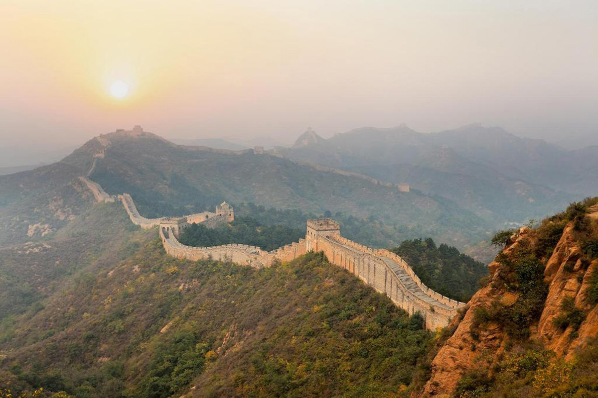

Великая Китайская стена

Великая Китайская стена — это не просто исторический памятник, а символ богатого культурного наследия и стойкости Китая. Она протянулась более 21 000 километров по территории 15 регионов Северного Китая и является объектом Всемирного наследия ЮНЕСКО с 1987 года. Стена была построена для защиты древнего Китая от вторжений и сегодня олицетворяет дух и силу китайского народа. .